corrfitter - Least-Squares Fit to Correlators¶
Correlator Model Objects¶
Correlator objects describe theoretical models that are fit to correlator data by varying the models’ parameters.
A model object’s parameters are specified through priors for the fit. A model assigns labels to each of its parameters (or arrays of related parameters), and these labels are used to identify the corresponding parameters in the prior. Parameters can be shared by more than one model object.
A model object also specifies the data that it is to model. The data is
identified by the data tag that labels it in the input file or gvar.dataset.Dataset.
-
class
corrfitter.Corr2(datatag, a, b, dE, s=1.0, tp=None, tmin=None, tmax=None, tdata=None, tfit=None, reverse=False, reverseddata=[], otherdata=[])¶ Two-point correlators
Gab(t) = <b(t) a(0)>.corrfitter.Corr2models thetdependence of a 2-point correlatorGab(t)usingGab(t) = sn * sum_i an[i] * bn[i] * fn(En[i], t) + so * sum_i ao[i] * bo[i] * fo(Eo[i], t)
where
snandsoare typically-1,0, or1andfn(E, t) = exp(-E*t) + exp(-E*(tp-t)) # tp>0 -- periodic or exp(-E*t) - exp(-E*(-tp-t))# tp<0 -- anti-periodic or exp(-E*t) # if tp is None (nonperiodic) fo(E, t) = (-1)**t * fn(E, t)
The fit parameters for the non-oscillating piece of
Gab(first term) arean[i],bn[i], anddEn[i]where:dEn[0] = En[0] dEn[i] = En[i]-En[i-1] > 0 (for i>0)
and therefore
En[i] = sum_j=0..i dEn[j]. The fit parameters for the oscillating piece are defined analogously:ao[i],bo[i], anddEo[i].The fit parameters are specified by the keys corresponding to these parameters in a dictionary of priors supplied to
corrfitter.CorrFitter. The keys are strings and are also used to access fit results. A log-normal prior can be specified for a parameter by including an entry forlog(c)in the prior, rather than forcitself. See thelsqfitdocumentation for information about other distributions that are available. Values for bothlog(c)andcare included in the parameter dictionary. Log-normal distributions are useful for forcingan,bnand/ordEto be positive.When
tp is not Noneand positive, the correlator is assumed to be symmetrical abouttp/2, withGab(t)=Gab(tp-t). Data fromt>tp/2is averaged with the corresponding data fromt<tp/2before fitting. Whentpis negative, the correlator is assumed to be anti-symetrical about-tp/2.Parameters: - datatag (str) – Key used to access correlator data in the input data
dictionary (see
corrfitter.CorrFitter):data[self.datatag]is a (1-d) array containing the correlator values (gvar.GVars). - a (str or tuple) – Key identifying the fit parameters for the source
amplitudes
anin the dictionary of priors provided tocorrfitter.CorrFitter; or a two-tuple of keys for the source amplitudes(an, ao). The corresponding values in the dictionary of priors are (1-d) arrays of prior values with one term for eachan[i]orao[i]. Replacing either key byNonecauses the corresponding term to be dropped from the fit function. These keys are used to label the corresponding parameter arrays in the fit results as well as in the prior. - b (str or tuple) – Same as
self.abut for the sinks(bn, bo)instead of the sources(an, ao). - dE (str) – Key identifying the fit parameters for the energy
differences
dEnin the dictionary of priors provided bycorrfitter.CorrFitter; or a two-tuple of keys for the energy differences(dEn, dEo). The corresponding values in the dictionary of priors are (1-d) arrays of prior values with one term for eachdEn[i]ordEo[i]. Replacing either key byNonecauses the corresponding term to be dropped from the fit function. These keys are used to label the corresponding parameter arrays in the fit results as well as in the prior. - s (float or tuple) – Overall factor
snfor non-oscillating part of fit function, or two-tuple of overall factors(sn, so)for both pieces. - tdata (list of ints) – The
ts corresponding to data entries in the input data. Note thatlen(self.tdata)should equallen(data[self.datatag]). Iftdatais omitted,tdata=numpy.arange(tp)is assumed, ortdata=numpy.arange(tmax)iftpis not specified. - tfit (list of ints) – List of
ts to use in the fit. Only data with thesets (all of which should be intdata) is used in the fit. Iftfitis omitted, it is assumed to be alltvalues fromtdatathat are larger than or equal totmin(if specified) and smaller than or equal totmax(if specified). - tp (int or
None) – Iftpis positive, the correlator is assumed to be periodic withGab(t)=Gab(tp-t). If negative, the correlator is assumed to be anti-periodic withGab(t)=-Gab(-tp-t). Settingtp=Noneimplies that the correlator is not periodic, but rather continues to fall exponentially astis increased indefinitely. - tmin (int or
None) – Iftfitis omitted, it is assumed to be alltvalues fromtdatathat are larger than or equal totminand smaller than or equal totmax(if specified).tminis ignored iftfitis specified. - tmax (int or
None) – Iftfitis omitted, it is assumed to be alltvalues fromtdatathat are larger than or equal totmin(if specified) and smaller than or equal totmax.tminis ignored iftfitandtdataare specified. - ncg (int) – Width of bins used to coarse-grain the correlator before
fitting. Each bin of
ncgcorrelator values is replaced by its average. Default isncg=1(ie, no coarse-graining). - reverse (bool) – If
True, the data associated withself.datatagis time-reversed (data -> [data[0], data[-1], data[-2]...data[1]]). Ignored otherwise. - otherdata (str or list or
None) – Data tag or list of data tags for additional data that are averaged with theself.datatagdata before fitting. This is useful including data from correlators with the source and sink interchanged. Default isNone. - reverseddata (str or list or
None) – Data tag or list of data tags for data that is time-reversed and then averaged with theself.datatagdata before fitting. Default isNone.
-
builddata(data)¶ Assemble fit data from dictionary
data.
-
builddataset(dataset)¶ Assemble fit data from data set dictionary
dataset.
-
buildprior(prior, nterm=None, mopt=None, extend=None)¶ Create fit prior by extracting relevant pieces from
prior.This routine selects the entries in dictionary
priorcorresponding to the model’s fit parameters. Ifntermis notNone, it also adjusts the number of terms that are retained.Parameters: - prior (dictionary) – Dictionary containing priors for fit parameters.
- nterm (
Noneor int or two-tuple) – Settingnterm=(n,no)restricts the number of terms tonin the non-oscillating part andnoin the oscillating part of the fit function. Replacing either or both byNonekeeps all terms, as does settingnterm=None. This optional argument is used to implement marginalization.
-
fitfcn(p, t=None)¶ Return fit function for parameters
p.
- datatag (str) – Key used to access correlator data in the input data
dictionary (see
-
class
corrfitter.Corr3(datatag, T, Vnn, a, b, dEa, dEb, sa=1.0, sb=1.0, Vno=None, Von=None, Voo=None, tdata=None, tfit=None, tmin=None. reverse=False, symmetric_V=False, reverseddata=[], otherdata=[])¶ Three-point correlators
Gavb(t, T) = <b(T) V(t) a(0)>.corrfitter.Corr3models thetdependence of a 3-point correlatorGavb(t, T)usingGavb(t, T) = sum_i,j san * an[i] * fn(Ean[i],t) * Vnn[i,j] * sbn * bn[j] * fn(Ebn[j],T-t) +sum_i,j san * an[i] * fn(Ean[i],t) * Vno[i,j] * sbo * bo[j] * fo(Ebo[j],T-t) +sum_i,j sao * ao[i] * fo(Eao[i],t) * Von[i,j] * sbn * bn[j] * fn(Ebn[j],T-t) +sum_i,j sao * ao[i] * fo(Eao[i],t) * Voo[i,j] * sbo * bo[j] * fo(Ebo[j],T-t)
where
fn(E, t) = exp(-E*t) fo(E, t) = (-1)**t * exp(-E*t)
The fit parameters for the non-oscillating piece of
Gavb(first term) areVnn[i,j],an[i],bn[j],dEan[i]anddEbn[j]where, for example:dEan[0] = Ean[0] dEan[i] = Ean[i] - Ean[i-1] > 0 (for i>0)
and therefore
Ean[i] = sum_j=0..i dEan[j]. The parameters for the other terms are similarly defined.Parameters: - datatag (str) – Tag used to label correlator in the input data.
- a (str or tuple) – Key identifying the fit parameters for the source
amplitudes
an, fora->V, in the dictionary of priors provided tocorrfitter.CorrFitter; or a two-tuple of keys for the source amplitudes(an, ao). The corresponding values in the dictionary of priors are (1-d) arrays of prior values with one term for eachan[i]orao[i]. Replacing either key byNonecauses the corresponding term to be dropped from the fit function. These keys are used to label the corresponding parameter arrays in the fit results as well as in the prior. - b (str or tuple) – Same as
self.abut for theV->bsink amplitudes(bn, bo). - dEa (str or tuple) – Fit-parameter label for
a->Vintermediate-state energy differencesdEan, or two-tuple of labels for the differences(dEan, dEao). Each label represents an array of energy differences. Replacing either label byNonecauses the corresponding term in the correlator function to be dropped. These keys are used to label the corresponding parameter arrays in the fit results as well as in the prior. - dEb (str or tuple) – Same as
self.dEabut forV->bsink energies(dEbn, dEbo). - sa (float or tuple) – Overall factor
sanfor the non-oscillatinga->Vterms in the correlator, or two-tuple containing the overall factors(san, sao)for the non-oscillating and oscillating terms. Default is(1,-1). - sb (float or tuple) – Same as
self.sabut forV->bsink overall factors(sbn, sbo). - Vnn (str or
None) –Fit-parameter label for the matrix of current matrix elements
Vnn[i,j]connecting non-oscillating states. The matrix must be square and symmetric ifsymmetric_V=True, and only the elementsV[i,j]forj>=iare specified, using a 1-d arrayV_symwith the following layout:[V[0,0],V[0,1],V[0,2]...V[0,N], V[1,1],V[1,2]...V[1,N], V[2,2]...V[2,N], . . . V[N,N]]
Note that
V[i,j] = V_symm[i*N + j - i * (i+1) / 2]forj>=i. SetVnn=Noneto omit it. - Vno (str or
None) – Fit-parameter label for the matrix of current matrix elementsVno[i,j]connecting non-oscillating to oscillating states. Only one ofVonandVnocan be specified ifsymmetric_V=True; the other is defined to be its transform. SetVno=Noneto omit it. - Von (str or
None) – Fit-parameter label for the matrix of current matrix elementsVno[i,j]connecting oscillating to non- oscillating states. Only one ofVonandVnocan be specified ifsymmetric_V=True; the other is defined to be its transform. SetVon=Noneto omit it. - Voo (str or
None) –Fit-parameter label for the matrix of current matrix elements
Voo[i,j]connecting oscillating states. The matrix must be square and symmetric ifsymmetric_V=True, and only the elementsV[i,j]forj>=iare specified, using a 1-d arrayV_symwith the following layout:[V[0,0],V[0,1],V[0,2]...V[0,N], V[1,1],V[1,2]...V[1,N], V[2,2]...V[2,N], . . . V[N,N]]
Note that
V[i,j] = V_symm[i*N + j - i * (i+1) / 2]forj>=i. SetVoo=Noneto omit it. - reverse (bool) –
If
True, the data associated withself.datatagis time-reversed before fitting (interchangingt=0witht=T). This is useful for doing simultaneous fits toa->V->bandb->V->a, where one is time-reversed relative to the other: e.g.,models = [ ... Corr3( datatag='a->V->b', tmin=3, T=15, a=('a', 'ao'), dEa=('dEa', 'dEao'), b=('b', 'bo'), dEb=('dEb', 'dEbo'), Vnn='Vnn', Vno='Vno', Von='Von', Voo='Voo', ), Corr3( datatag='b->V->a', tmin=3, T=15, a=('a', 'ao'), dEa=('dEa', 'dEao'), b=('b', 'bo'), dEb=('dEb', 'dEbo'), Vnn='Vnn', Vno='Vno', Von='Von', Voo='Voo', reverse=True, ), ... ]
Another (faster) strategy for such situations is to average data from the second process with that from the first, before fitting, using keyword
reverseddata. Default isFalse. - symmetric_V (bool) – If
True, the fit function fora->V->bis unchanged (symmetrical) under the the interchange ofaandb. ThenVnnandVooare square, symmetric matrices and their priors are one-dimensional arrays containing only elementsV[i,j]withj>=i, as discussed above. Only one ofVonandVnocan be specified ifsymmetric_V=True; the other is defined to be its transform. - T (int) – Separation between source and sink.
- tdata (list of ints) – The
ts corresponding to data entries in the input data. If omitted, is assumed equal tonumpy.arange(T + 1). - tfit (list of ints) – List of
ts to use in the fit. Only data with thesets (all of which should be intdata) is used in the fit. If omitted, is assumed equal tonumpy.arange(tmin, T - tmin + 1). - tmin (int or
None) – Iftfitis omitted, it is set equal tonumpy.arange(tmin, T - tmin + 1).tminis ignored iftfitis specified. - ncg (int) – Width of bins used to coarse-grain the correlator before
fitting. Each bin of
ncgcorrelator values is replaced by its average. Default isncg=1(ie, no coarse-graining). - reverseddata (str or list or
None) –Data tag or list of data tags for additional data that are time-reversed and then averaged with the
self.datatagdata before fitting. This is useful for folding data fromb->V->ainto a fit fora->V->b: e.g.,Corr3( datatag='a->V->b', a=('a', 'ao'), dEa=('dEa', 'dEao'), b=('b', 'bo'), dEb=('dEb', 'dEbo'), Vnn='Vnn', Vno='Vno', Von='Von', Voo='Voo', tmin=3, T=15, reverseddata='b->V->a' ),
This is faster than using a separate model with
reverse=True. Default isNone. - otherdata (str or list or
None) – Data tag or list of data tags for additional data that are averaged with theself.datatagdata before fitting. Default isNone.
corrfitter.CorrFitter Objects¶
corrfitter.CorrFitter objects are wrappers for lsqfit.nonlinear_fit() which
is used to fit a collection of models to a collection of Monte Carlo data.
-
class
corrfitter.CorrFitter(models, nterm=None, ratio=False, fast=True, **fitterargs)¶ Nonlinear least-squares fitter for a collection of correlator models.
Parameters: - models – List of models, derived from
lsqfit.MultiFitterModel, to be fit to the data. Individual models in the list can be replaced by lists of models or tuples of models; see below. - nterm (tuple or int or None) – Number of terms fit in the
non-oscillating part of fit functions; or a two-tuple of
numbers indicating how many terms to fit in each of the
non-oscillating and oscillating parts. Terms omitted from the
fit are marginalized (i.e., included as corrections to the
fit data). If set to
None, all parameters in the prior are fit, and none are marginalized. - ratio (bool) – If
True, implement marginalization using ratios:data_marg = data * fitfcn(prior_marg) / fitfcn(prior). IfFalse(default), implement using differences:data_marg = data + (fitfcn(prior_marg) - fitfcn(prior)). - fast (bool) – Setting
fast=True(default) strips any variable not required by the fit from the prior. This speeds fits but loses information about correlations between variables in the fit and those that are not. The information can be restored usinglsqfit.wavgafter the fit. - fitterargs – Additional arguments for the
lsqfit.nonlinear_fit, such astol,maxit,svdcut,fitter, etc., as needed.
-
bootstrap_fit_iter(datalist=None, n=None)¶ Iterator that creates bootstrap copies of a
corrfitter.CorrFitterfit using bootstrap data from listdata_list.A bootstrap analysis is a robust technique for estimating means and standard deviations of arbitrary functions of the fit parameters. This method creates an interator that implements such an analysis of list (or iterator)
datalist, which contains bootstrap copies of the original data set. Eachdata_list[i]is a differentdatainput forself.lsqfit()(that is, a dictionary containing fit data). The iterator works its way through the data sets indata_list, fitting the next data set on each iteration and returning the resultinglsqfit.LSQFitfit object. Typical usage, for ancorrfitter.CorrFitterobject namedfitter, would be:for fit in fitter.bootstrap_iter(datalist): ... analyze fit parameters in fit.p ...
Parameters: - data_list (sequence or iterator or
None) – Collection of bootstrapdatasets for fitter. IfNone, the data_list is generated internally using the means and standard deviations of the fit data (assuming gaussian statistics). - n (integer) – Maximum number of iterations if
nis notNone; otherwise there is no maximum.
Returns: Iterator that returns a
lsqfit.LSQFitobject containing results from the fit to the next data set indata_list.- data_list (sequence or iterator or
-
bootstrap_iter(datalist=None, n=None)¶ Iterator that creates bootstrap copies of a
corrfitter.CorrFitterfit using bootstrap data from listdata_list.A bootstrap analysis is a robust technique for estimating means and standard deviations of arbitrary functions of the fit parameters. This method creates an interator that implements such an analysis of list (or iterator)
datalist, which contains bootstrap copies of the original data set. Eachdata_list[i]is a differentdatainput forself.lsqfit()(that is, a dictionary containing fit data). The iterator works its way through the data sets indata_list, fitting the next data set on each iteration and returning the resultinglsqfit.LSQFitfit object. Typical usage, for ancorrfitter.CorrFitterobject namedfitter, would be:for fit in fitter.bootstrap_iter(datalist): ... analyze fit parameters in fit.p ...
Parameters: - data_list (sequence or iterator or
None) – Collection of bootstrapdatasets for fitter. IfNone, the data_list is generated internally using the means and standard deviations of the fit data (assuming gaussian statistics). - n (integer) – Maximum number of iterations if
nis notNone; otherwise there is no maximum.
Returns: Iterator that returns a
lsqfit.LSQFitobject containing results from the fit to the next data set indata_list.- data_list (sequence or iterator or
-
static
read_dataset(inputfiles, grep=None, keys=None, h5group='/', binsize=1, tcol=0, Gcol=1)¶ Read correlator Monte Carlo data from files into a
gvar.dataset.Dataset.Three files formats are supported by
read_dataset(), depending uponinputfiles.If
inputfilesis a string ending in'.h5', it is assumed to be the name of a file in hpf5 format. The file is opened ash5fileand all hpf5 datasets inh5file[h5group]are collected into a dictionary and returned.The second file format is the text-file format supported by
gvar.dataset.Dataset: each line consists of a tag or key identifying a correlator followed by data corresponding to a single Monte Carlo measurement of the correlator. This format is assumed ifinputfilesis a filename or a list of filenames. It allows a single file to contain an arbitrary number of measurements for an arbitrary number of different correlators. The data can also be spread over multiple files. A typical file might look like# this is a comment; it is ignored aa 1.237 0.912 0.471 bb 3.214 0.535 0.125 aa 1.035 0.851 0.426 bb 2.951 0.625 0.091 ...
which describes two correlators,
aaandbb, each having three differenttvalues.The third file format is assumed when
inputfilesis a dictionary. The dictionary’s keys and values identify the (one-dimensional) correlators and the files containing their Monte Carlo data, respectively. So the data for correlatorsaaandbbabove are in separate files:fileinputs = dict(aa='aafile', bb='bbfile')
Each line in these data files consists of an index
tvalue followed by the corresponding value for correlatorG(t). Thets increase from line to line up to their maximum value, at which point they repeat. Theaafilefile for correlatoraaabove would look like:# this is a comment; it is ignored 1 1.237 2 0.912 3 0.471 1 1.035 2 0.851 3 0.426 ...
The columns in these files containing
tandG(t)are assumed to be columns 0 and 1, respectively. These can be changed by setting argumentstcolandGcol, respectively.corrfitter.process_datasetsupports keywordsbinsize,grepandkeys. Ifbinsizeis greater than one, random samples are binned with bins of sizebinsize. Ifgrepis notNone, only keys that match or partially match regular expressiongrepare retained; others are ignored. Ifkeysis notNone, only keys that are in listkeysare retained; others are discarded.
-
simulated_pdata_iter(n, dataset, pexact=None, rescale=1.0)¶ Create iterator that returns simulated fit pdata from
dataset.Simulated fit data has the same covariance matrix as
pdata=self.process_dataset(dataset), but mean values that fluctuate randomly, from copy to copy, around the value of the fitter’s fit function evaluated atp=pexact. The fluctuations are generated from bootstrap copies ofdataset.The best-fit results from a fit to such simulated copies of
pdatashould agree with the numbers inpexactto within the errors specified by the fits (to the simulated data) —pexactgives the “correct” values for the parameters. Knowing the correct value for each fit parameter ahead of a fit allows us to test the reliability of the fit’s error estimates and to explore the impact of various fit options (e.g.,fitter.chained_fitversusfitter.lsqfit, choice of SVD cuts, omission of select models, etc.)Typically one need examine only a few simulated fits in order to evaluate fit reliability, since we know the correct values for the parameters ahead of time. Consequently this method is much faster than traditional bootstrap analyses.
pexactis usually taken from the last fit done by the fitter (self.fit.pmean) unless overridden in the function call. Typical usage is as follows:dataset = gvar.dataset.Dataset(...) data = gvar.dataset.avg_data(dataset) ... fit = fitter.lsqfit(data=data, ...) ... for spdata in fitter.simulated_pdata_iter(n=4, dataset): # redo fit 4 times with different simulated data each time # here pexact=fit.pmean is set implicitly sfit = fitter.lsqfit(pdata=spdata, ...) ... check that sfit.p (or functions of it) agrees ... ... with pexact=fit.pmean to within sfit.p's errors ...
Parameters: - n (int) – Maximum number of simulated data sets made by iterator.
- dataset (dictionary) – Dataset containing Monte Carlo copies of
the correlators.
dataset[datatag]is a two-dimensional array for the correlator corresponding todatatag, where the first index labels the Monte Carlo copy and the second index labels time. - pexact (dictionary or
None) – Correct parameter values for fits to the simulated data — fit results should agree withpexactto within errors. IfNone, usesself.fit.pmeanfrom the last fit. - rescale (float) – Rescale errors in simulated data by
rescale(i.e., multiply covariance matrix byrescale ** 2). Default is one, which implies no rescaling.
- models – List of models, derived from
corrfitter.EigenBasis Objects¶
corrfitter.EigenBasis objects are useful for analyzing two-point and
three-point correlators with multiplle sources and sinks.
The current interface for EigenBasis is experimental.
It may change in the near future, as experience
accumulates from its use.
-
class
corrfitter.EigenBasis(data, srcs, t, keyfmt='{s1}.{s2}', tdata=None, osc=False)¶ Eigen-basis of correlator sources/sinks.
Given 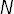 sources/sinks and the 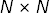 matrix 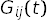 of 2-point correlators created from every combination of source and sink, we can define a new basis of sources that makes the matrix correlator approximately diagonal. Each source in the new basis is associated with an eigenvector 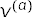 defined by the matrix equation
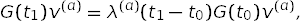
for some 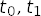. As increase, fewer and fewer states couple to 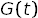. In the limit where only states couple, the correlator
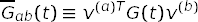
becomes diagonal, and each diagonal element couples to only a single state.
In practice, this condition is only approximate: that is, 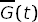 is approximately diagonal, with diagonal elements that overlap strongly with the lowest lying states, but somewhat with other states. These new sources are nevertheless useful for fits because there is an obvious prior for their amplitudes:
prior[a][b]approximately equal to one whenb==a, approximately zero whenb!=aandb<N, and order one otherwise.Such a prior can significantly enhance the stability of a multi-source fit, making it easier to extract reliable results for excited states. It encodes the fact that only a small number of states couple strongly to by time 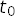, without being overly prescriptive about what their energies are. We can easilty project our correlator onto the new eigen-basis (using
EigenBasis.apply()) in order to use this prior, but this is unnecessary.EigenBasis.make_prior()creates a prior of this type in the eigen-basis and then transforms it back to the original basis, thereby creating an equivalent prior for the amplitudes corresponding to the original sources.Typical usage is straightforward. For example,
basis = EigenBasis( data, # data dictionary keyfmt='G.{s1}.{s2}', # key format for dictionary entries srcs=['local', 'smeared'], # names of sources/sinks t=(5, 7), # t0, t1 used for diagonalization ) prior = basis.make_prior(nterm=4, keyfmt='m.{s1}')
creates an eigen-prior that is optimized for fitting the 2-by-2 matrix correlator given by
[[data['G.local.local'], data['G.local.smeared']] [data['G.smeared.local'], data['G.smeared.smeared']]]
where
datais a dictionary containing all the correlators. Parametertspecifies the times used for the diagonalization: 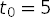 and 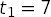. Parameterntermspecifies the number of terms in the fit.basis.make_prior(...)creates priorsprior['m.local']andprior['m.smeared']for the amplitudes corresponding to the local and smeared source, and a priorprior[log(m.dE)]for the logarithm of the energy differences between successive levels.The amplitudes
prior['m.local']andprior['m.smeared']are complicated, with strong correlations between local and smeared entries for the same state. Projecting the prior unto the eigen-basis, however, reveals its underlying structure:p_eig = basis.apply(prior)
implies
p_eig['m.0'] = [1.0(3), 0.0(1), 0(1), 0(1)] p_eig['m.1'] = [0.0(1), 1.0(3), 0(1), 0(1)]
where the different entries are now uncorrelated. This structure registers our expectation that the
'm.0'source in the eigen-basis overlaps strongly with the ground state, but almost not at all with the first excited state; and vice versa for the'm.1'source. Amplitudep_eigis noncommittal about higher states. This structure is built intoprior['m.local']andprior['smeared'].It is easy to check that fit results are consistent with the underlying prior. This can be done by projecting the best-fit parameters unto the eigen-basis using
p_eig = basis.apply(fit.p). Alternatively, a table listing the amplitudes in the new eigen-basis, together with the energies, is printed by:print(basis.tabulate(fit.p, keyfmt='m.{s1}', eig_srcs=True))
The prior can be adjusted, if needed, using the
dEfac,ampl, andstatesarguments inEigenBasis.make_prior().EigenBasis.tabulate()is also useful for printing the amplitudes for the original sources:print(basis.tabulate(fit.p, keyfmt='m.{s1}'))
corrfitter.EigenBasisrequires the scipy library in Python.Parameters: - data – Dictionary containing the matrix correlator using the original basis of sources and sinks.
- keyfmt – Format string used to generate the keys
in dictionary
datacorresponding to different components of the matrix of correlators. The key for 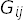 is assumed to bekeyfmt.format(s1=i, s2=j)whereiandjare drawn from the list of sources,srcs. - srcs – List of source names used with
keyfmtto create the keys for finding correlator components in the data dictionary. - t –
t=(t0, t1)specifies thetvalues used to diagonalize the correlation function. Largertvalues are better than smaller ones, but only if the statistics are adequate. When fitting staggered-quark correlators, with oscillating components, choosetvalues where the oscillating pieces are positive (typically oddt). If only onetis given,t=t0, thent1=t0+2is used with it. Fits that usecorrfitter.EigenBasistypically depend only weakly on the choice oft. - tdata – Array containing the times for which there is
correlator data.
tdatais set equal tonumpy.arange(len(G_ij))if it is not specified (or equalsNone).
The interface for
EigenBasisis experimental. It may change in the near future, as experience accumulates from its use.In addition to
keyfmt,srcs,tandtdataabove, the main attributes are:-
E¶ Array of approximate energies obtained from the eigenanalysis.
-
eig_srcs¶ List of labels for the sources in the eigen-basis:
'0','1'…
-
svdcorrection¶ The sum of the SVD corrections added to the data by the last call to
EigenBasis.svd().
-
svdn¶ The number of degrees of freedom modified by the SVD correction in the last call to
EigenBasis.svd().
-
v¶ v[a]is the eigenvector corresponding to sourceain the new basis, wherea=0,1....
-
v_inv¶ v_inv[i]is the inverse-eigenvector for transforming from the new basis back to the original basis.
The main methods are:
-
apply(data, keyfmt='{s1}')¶ Transform
datato the eigen-basis.The data to be transformed is
data[k]where keykequalskeyfmt.format(s1=s1)for vector data, orkeyfmt.format(s1=s1, s2=s2)for matrix data with sourcess1ands2drawn fromself.srcs. A dictionary containing the transformed data is returned using the same keys but with the sources replaced by'0', '1' ...(frombasis.eig_srcs).If
keyfmtis an array of formats, the transformation is applied for each format and a dictionary containing all of the results is returned. This is useful when the same sources and sinks are used for different types of correlators (e.g., in both two-point and three-point correlators).
-
make_prior(nterm, keyfmt='{s1}', dEfac='1(1)', ampl=('1.0(3)', '0.03(10)', '0.2(1.0)'), states=None, eig_srcs=False)¶ Create prior from eigen-basis.
Parameters: - nterm (int) – Number of terms in fit function.
- keyfmt (str) – Format string usded to generate keys for
amplitudes and energies in the prior (a dictionary):
keys are obtained from
keyfmt.format(s1=a)whereais one of the original sources,self.srcs, ifeig_srcs=False(default), or one of the eigen-sources,self.eig_srcs, ifeig_srcs=True. The key for the energy differences is generated by'log({})'.format(keyfmt.format(s1='dE')). The default iskeyfmt={s1}. - dEfac (str or
gvar.GVar) – A string orgvar.GVarfrom which the priors for energy differencesdE[i]are constructed. The mean value fordE[0]is set equal to the lowest energy obtained from the diagonalization. The mean values for the otherdE[i]s are set equal to the difference between the lowest two energies from the diagonalization (or to the lowest energy if there is only one). These central values are then multiplied bygvar.gvar(dEfac). The default value, 1(1), sets the width equal to the mean value. The prior is the logarithm of the resulting values. - ampl (tuple) – A 3-tuple of strings or
gvar.GVars from which priors are contructed for amplitudes corresponding to the eigen-sources.gvar.gvar(ampl[0])is used for for source components where the overlap with a particular state is expected to be large;1.0(3)is the default value.gvar.gvar(ampl[1])is used for states that are expected to have little overlap with the source;0.03(10)is the default value.gvar.gvar(ampl[2])is used where there is nothing known about the overlap of a state with the source;0(1)is the default value. - states (list) – A list of the states in the correlator corresponding
to successive eigen-sources, where
states[i]is the state corresponding toi-th source. The correspondence between sources and states is strong for the first sources, but can decay for subsequent sources, depending upon the quality of the data being used and thetvalues used in the diagonalization. In such situations one might specify fewer states than there are sources by making the length ofstatessmaller than the number of sources. Settingstates=[]assigns broad priors to the every component of every source. Parameterstatescan also be used to deal with situations where the order of later sources is not aligned with that of the actual states: for example,states=[0,1,3]connects the eigen-sources with the first, second and fourth states in the correlator. The default value,states=[0, 1 ... N-1]whereNis the number of sources, assumes that sources and states are aligned. - eig_srcs (bool) – Amplitudes for the eigen-sources are
tabulated if
eig_srcs=True; otherwise amplitudes for the original basis of sources are tabulated (default).
-
svd(data, keyfmt=None, svdcut=1e-15)¶ Apply SVD cut to data in the eigen-basis.
The SVD cut is applied to
data[k]where keykequalskeyfmt.format(s1=s1)for vector data, orkeyfmt.format(s1=s1, s2=s2)for matrix data with sourcess1ands2drawn fromself.srcs. The data are transformed to the eigen-basis of sources/sinks before the cut is applied and then transformed back to the original basis of sources. Results are returned in a dictionary containing the modified correlators.If
keyfmtis a list of formats, the SVD cut is applied to the collection of data formed from each format. The defaul value forkeyfmtisself.keyfmt.
-
tabulate(p, keyfmt='{s1}', nterm=None, nsrcs=None, eig_srcs=False, indent=' ')¶ Create table containing energies and amplitudes for
ntermstates.Given a correlator-fit result
fitand a correspondingEigenBasisobjectbasis, a table listing the energies and amplitudes for the firstNstates in correlators can be printed usingprint basis.tabulate(fit.p)
where
Nis the number of sources andbasisis anEigenBasisobject. The amplitudes are tabulated for the original sources unless parametereig_srcs=True, in which case the amplitudes are projected onto the the eigen-basis defined bybasis.Parameters: - p – Dictionary containing parameters values.
- keyfmt – Parameters are
p[k]where keyskare obtained fromkeyfmt.format(s1=s)wheresis one of the original sources (basis.srcs) or one of the eigen-sources (basis.eig_srcs). The default definition is'{s1}'. - nterm – The number of states from the fit tabulated.
The default sets
ntermequal to the number of sources in the basis. - nsrcs – The number of sources tabulated. The default causes all sources to be tabulated.
- eig_srcs – Amplitudes for the eigen-sources are
tabulated if
eig_srcs=True; otherwise amplitudes for the original basis of sources are tabulated (default). - indent – A string prepended to each line of the table.
Default is
4 * ' '.
-
unapply(data, keyfmt='{s1}')¶ Transform
datafrom the eigen-basis to the original basis.The data to be transformed is
data[k]where keykequalskeyfmt.format(s1=s1)for vector data, orkeyfmt.format(s1=s1, s2=s2)for matrix data with sourcess1ands2drawn fromself.eig_srcs. A dictionary containing the transformed data is returned using the same keys but with the original sources (fromself.srcs).If
keyfmtis an array of formats, the transformation is applied for each format and a dictionary containing all of the results is returned. This is useful when the same sources and sinks are used for different types of correlators (e.g., in both two-point and three-point correlators).
Fast Fit Objects¶
-
class
corrfitter.fastfit(G, ampl='0(1)', dE='1(1)', E=None, s=(1, -1), tp=None, tmin=6, svdcut=1e-06, osc=False, nterm=10)¶ Fast fit of a two-point correlator.
This function class estimates
E=En[0]andampl=an[0]*bn[0]for a two-point correlator modeled byGab(t) = sn * sum_i an[i]*bn[i] * fn(En[i], t) + so * sum_i ao[i]*bo[i] * fo(Eo[i], t)
where
(sn, so)is typically(1, -1)andfn(E, t) = exp(-E*t) + exp(-E*(tp-t)) # tp>0 -- periodic or exp(-E*t) - exp(-E*(-tp-t))# tp<0 -- anti-periodic or exp(-E*t) # if tp is None (nonperiodic) fo(E, t) = (-1)**t * fn(E, t)
Prior estimates for the amplitudes and energies of excited states are used to remove (that is, marginalize) their contributions to give a corrected correlator
Gc(t)that includes uncertainties due to the terms removed. Estimates ofEare given by:Eeff(t) = arccosh(0.5 * (Gc(t+1) + Gc(t-1)) / Gc(t)),
The final estimate is the weighted average
Eeff_avgof theEeff(t)s for differentts. Similarly, an estimate for the amplitudeamplis obtained from the weighted average ofAeff(t) = Gc(t) / fn(Eeff_avg, t).
If
osc=True, an estimate is returned forEo[0]rather thanEn[0], andao[0]*bo[0]rather thanan[0]*bn[0]. These estimates are reliable whenEo[0]is smaller thanEn[0](and so dominates at larget), but probably not otherwise.Examples
The following code examines a periodic correlator (period 64) at large times (
t >= tmin), where estimates for excited states don’t matter much:>>> import corrfitter as cf >>> print(G) [0.305808(29) 0.079613(24) ... ] >>> fit = cf.fastfit(G, tmin=24, tp=64) >>> print('E =', fit.E, ' ampl =', fit.ampl) E = 0.41618(13) ampl = 0.047686(95)
Smaller
tminvalues can be used if (somewhat) realistic priors are provided for the amplitudes and energy gaps:>>> fit = cf.fastfit(G, ampl='0(1)', dE='0.5(5)', tmin=3, tp=64) >>> print('E =', fit.E, ' ampl =', fit.ampl) E = 0.41624(11) ampl = 0.047704(71)
The result here is roughly the same as from the larger
tmin, but this would not be true for a correlator whose signal to noise ratio falls quickly with increasing time.corrfitter.fastfitestimates the amplitude and energy at all times larger thantminand then averages to get its final results. The chi-squared of the average (e.g.,fit.E.chi2) gives an indication of the consistency of the estimates from different times. The chi-squared per degree of freedom is printed out for both the energy and the amplitude using>>> print(fit) E: 0.41624(11) ampl: 0.047704(71) chi2/dof [dof]: 0.9 0.8 [57] Q: 0.8 0.9
Large values for
chi2/dofindicate an unreliable results. In such cases the priors should be adjusted, and/ortminincreased, and/or an SVD cut introduced. The averages in the example above have good values forchi2/dof.Parameters: - G – An array of
gvar.GVars containing the two-point correlator.G[j]is assumed to correspond to timet=j, wherej=0.... - ampl – A
gvar.GVaror its string representation giving an estimate for the amplitudes of the ground state and the excited states. Useampl=(ampln, amplo)when the correlator contains oscillating states;amplnis the estimate for non-oscillating states, andamplofor oscillating states; setting one or the other toNonecauses the corresponding terms to be dropped. Default value is'0(1)'. - dE – A
gvar.GVaror its string representation giving an estimate for the energy separation between successive states. This estimate is also used to provide an estimate for the lowest energy when parameterEis not specified. UsedE=(dEn, dEo)when the correlator contains oscillating states:dEnis the estimate for non-oscillating states, anddEofor oscillating states; setting one or the other toNonecauses the corresponding terms to be dropped. Default value is'1(1)'. - E – A
gvar.GVaror its string representation giving an estimate for the energy of the lowest-lying state. UseE=(En, Eo)when the correlator contains oscillating states:Enis the estimate for the lowest non-oscillating state, andEofor lowest oscillating state. SettingE=NonecausesEto be set equal todE. Default value isNone. - s – A tuple containing overall factors
(sn, so)multiplying contributions from the normal and oscillating states. Default is(1,-1). - tp (int or None) – When not
None, the correlator is periodic with periodtpwhentp>0, or anti-periodic with period-tpwhentp<0. Settingtp=Noneimplies that the correlator is neither periodic nor anti-periodic. Default isNone. - tmin (int) – Only
G(t)witht >= tminare used. Default value is6. - svdcut (float or None) – SVD cut used in the weighted average
of results from different times. (See the
corrfitter.CorrFitterdocumentation for a discussion of SVD cuts.) Default is1e-6. - osc (bool) – Set
osc=Trueif the lowest-lying state is an oscillating state. Default isFalse.
Note that specifying a single
gvar.GVarg(as opposed to a tuple) for any of parametersampl,dE, orEis equivalent to specifying the tuple(g, None)whenosc=False, or the tuple(None, g)whenosc=True. A similar rule applies to parameters.corrfitter.fastfitobjects have the following attributes:-
E¶ Energy of the lowest-lying state (
gvar.GVar).
-
ampl¶ Amplitude of the lowest-lying state (
gvar.GVar).
Both
Eandamplare obtained by averaging results calculated for each time larger thantmin. These are averaged to produce a final result. The consistency among results from different times is measured by the chi-squared of the average. Each ofEandamplhas the following extra attributes:-
chi2¶ chi-squared for the weighted average.
-
dof¶ The effective number of degrees of freedom in the weighted average.
-
Q¶ The probability that the chi-squared could have been larger, by chance, assuming that the data are all Gaussain and consistent with each other. Values smaller than 0.05 or 0.1 suggest inconsistency. (Also called the p-factor.)
An easy way to inspect these attributes is to print the fit object
fitusingprint(fit), which lists the values of the energy and amplitude, thechi2/doffor each of these, the number of degrees of freedom, and theQfor each.- G – An array of